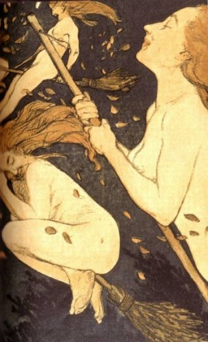
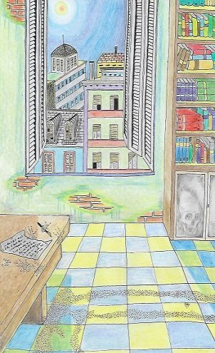
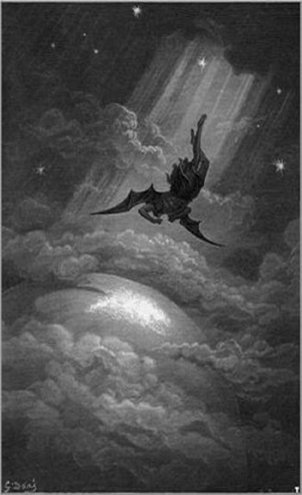

Versos en abatimiento
William Butler Yates

Sabbat de Brujas. Grabado de 1909
¿Cuando vi por última vez
los grandes ojos verdes y los cuerpos vacilantes
de los negros leopardos de la luna?
Las brujas esquivas, damas nobles,
con sus escobas y lamentos,
y furiosas lágrimas, ya se fueron
Se perdieron los sagrados centauros de los montes;
Sólo me queda la débil mañana.
Y la heroica Selene vencida en el destierro;
tengo cincuenta años y ahora
he sufrir al pusilánime sol.
Ir al artículo
Aire Frio
Howard Philips Lovecraft

Copyrigth: “El Ilustrador” SMD
Muchos me preguntan por qué temo las corrientes de aire gélido, por qué tiemblo más que otros cuando ingreso en una habitación fría y reacciono con angustia y repulsión cuando el viento fresco del poniente se desliza entre la tibia atmósfera de un apacible día otoñal.
No negaré que reacciono frente al frío como otros lo hacen frente a los olores nauseabundos y por esta razón voy a relatar el más espeluznante hecho que me ha sucedido, para que juzguen si ello explica o no mi extraño comportamiento. Es un error conjeturar que el terror se asocia únicamente con la oscuridad, el silencio o la soledad.
Ir al artículo
¡Avanti y ¡Piú avanti!
De Almafuerte

Si te postran diez veces, te levantas
otras diez, otras cien, otras quinientas:
no han de ser tus caídas tan violentas
ni tampoco, por ley, han de ser tantas.
Con el hambre genial con que las plantas
asimilan el humus avarientas,
deglutiendo el rencor de las afrentas
se formaron los santos y las santas.
Obsecación asnal, para ser fuerte,
nada más necesita la criatura
y en cualquier infeliz se me figura
que se mellan los garfios de la suerte...
Ir al artículo